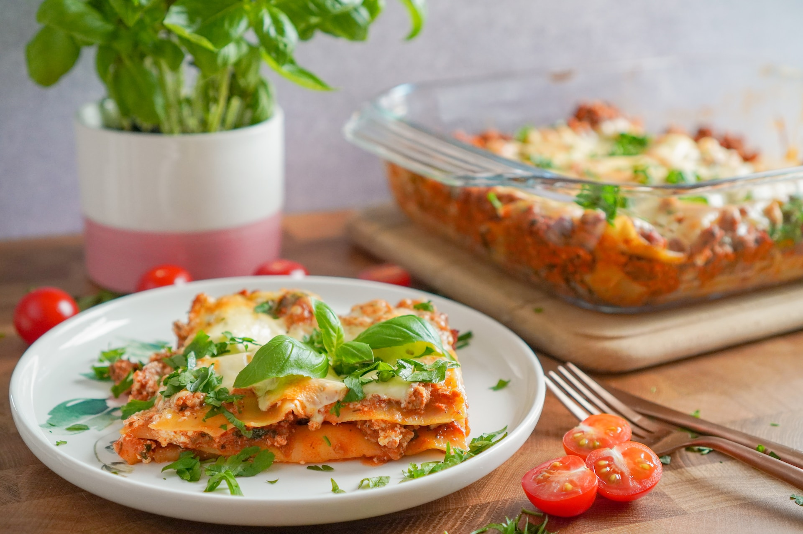

Lasagna

Description
A quick and easy beef lasagne that's extra cheesy and ready to eat in just 1 hour! And best of all, a time saver, as there's absolutely no need to make a bechamel sauce! The perfect midweek family dinner.
Ingredients
- onion & garlic - use a finely diced brown (or yellow) onion. You can use either store-bought minced garlic or mince your own garlic cloves.
- beef mince - also referred to as ground beef or ground beef mince.
- tomato paste - this gives the sauce a rich flavour.
- tinned tomatoes - choose diced or crushed tomatoes.
- beef stock - use a liquid beef stock or make your own by mixing 1 teaspoon of beef stock powder through every 1 cup of water.
- dried italian herbs - I like to use parsley and oregano.
- cheeses - mozzarella is the secret to this oozy, cheesy beef lasagne! Grated parmesan on top also gives that lovely special flavour hit that you just have to have with a pasta dish!
- lasagne sheets - I like to use fresh lasagne sheets rather than dried lasagne sheets as they cook much quicker and stay softer and more moist.
Steps
- SAUTÉ - Add the diced onion and minced garlic to a large frying pan. Sauté the onion and garlic until soft and translucent.
- ADD THE BEEF - Add the beef mince, breaking up the clumps with a spoon. Cook until the mince is browned.
- COOK THE SAUCE - Add the tomato paste, tomatoes, beef stock, Italian herbs and salt and pepper. Bring to a boil and then simmer (stirring occasionally) for 15 - 20 minutes.
- ASSEMBLE -
Assemble the lasagne by adding a layer of sauce to the bottom of the prepared baking dish. Top with fresh lasagne sheets and then shredded mozzarella cheese.
Repeat the layers until you have used all of the sauce and lasagne sheets. Finish with a layer of mozzarella cheese and add a sprinkle of grated parmesan over the top.
- BAKE - Bake in a preheated oven for 30-40 minutes or until cooked through and the cheese has melted and turned golden on top. Tip: If you notice the cheese over-browning too much, add a loose sheet of foil over the top or move to a lower shelf in the oven.